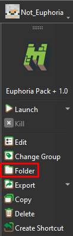
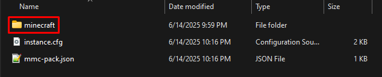
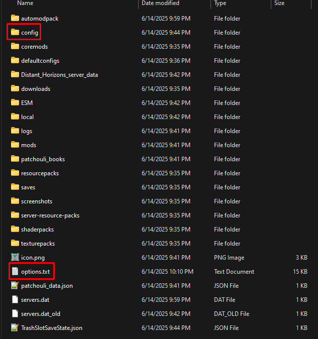
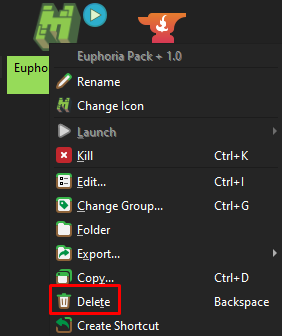

Open Prism Launcher > Select the Modpack > Click the "Folder" button, navigate to the minecraft folder, copy options.txt and the config folder somewhere safe.
  Right click the modpack > select "Delete"
Note: You must successfully join the server and close out of minecraft before doing the following.
Follow Step 1. to navigate back to the minecraft folder and put options.txt and config back. Overwrite the current files if asked.